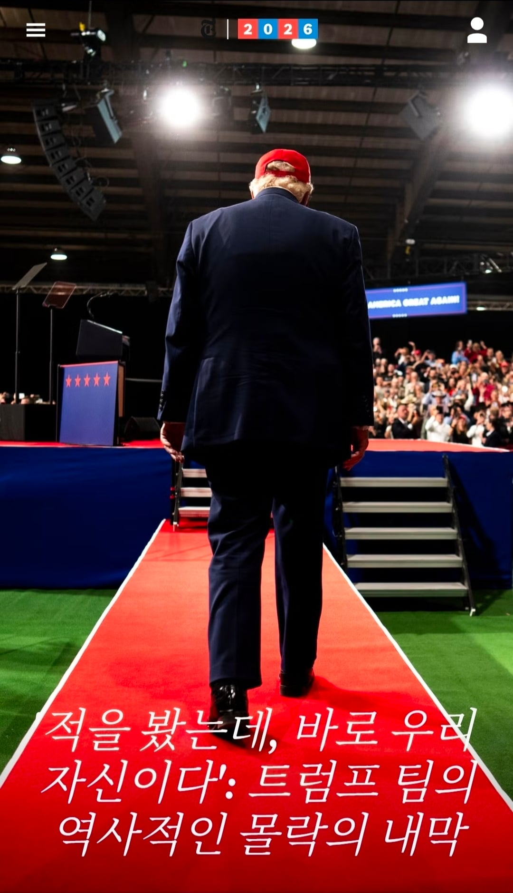

선거 6일 전, 트럼프 대통령을 보좌하는 최고 수석 전략가 20여명이 비공개 화상회의에 접속했다. 분위기는 침울했다. 논의는 겉돌다가 누군가가 분위기를 띄우려고 농담으로 독극물을 먹고 자결을 하는 게 어떠냐며 낄낄거리기 시작했다.
"하얀 알약부터 먹을래요? 아님 검은 알약부터 먹을래요?" 백악관 여론조사 수석전문가 토니 파브리지오가 말했다. 효과는 없는 듯 보였다. 몇몇은 억지로 웃었지만 분위기는 그대로였다. 논의는 이어졌다.
공화당의 최고 데이터 분석 컨설턴트 중 한명인 팀 살러가 두가지 예상 시나리오를 보고하기 시작했다. 하나는 4억달러 규모의 MAGA 정치광고 프로그램을 미친듯이 퍼붓자는 것이었다. 그러면 목표 유권자들이 반응해서 투표장에 나올 것이라고 기대하는 것이었다. "두가지 중 유일하게 긍정적인 시나리오입니다."
다른 시나리오는 대참패 였다. 화상회의에 참여한 모두가 침묵하고 있었다. 전 백악관 입법 및 정치보좌관 제임스 블레어는 "(사직하려고) 사무실이랑 신변을 정리하고 있어요. (웃음) 다른 분들도 그렇게 하시는게 좋겠습니다."라고 침묵을 깼다. 그리고 이후 30여분동안 참석자들은 의미없는 농담을 주고받고 있었다.
장례식 준비, 교도소 음식은 어떨까? 대통령이 사면해 줄까? 심지어 국외 도피에 대한 농담도 나왔다. 죽으면 과연 어디로 갈까? 라는 농담까지 나왔다. 블레어는 "적어도 네타냐후는 이정도로 패배하지는 않았지." 라고 혼잣말을 중얼거렸다. 그러자 파브리지오가 대꾸했다. "어쩌면 이스라엘에서 망명을 받아줄 수는 있겠네요."
그리고 7일뒤, 공화당의 최악의 악몽은 현실화되었다. 민주당의 상하원 압도적 다수 확보. 1년전엔 아무도 예상못했던 캔자스, 사우스 캐롤라이나, 텍사스 등 공화당의 핵심 거점들이 줄줄이 민주당의 손으로 넘어갔다. 공화당의 끔직한 패배, 말 그대로 학살이었다.
뉴욕타임즈는 이 기사를 위해 중간선거에 직접 관여한 70여명의 공화당 내부 관계자(의원, 선거전략가,당 지도부, 여론조사전문가, 백악관 관계자, 의회 보좌관)과의 인터뷰를 가졌으며 이를 바탕으로 본 기사를 작성하였다. 인터뷰 대상자 대부분은 익명으로 취재에 응했다.
최악의 성적표를 받아는 공화당은 지금 정신을 차릴 수가 없다. 아니 제정신이면 이런 결과를 만들면 안되었다. 공화당 역사상 최대 규모로 선거자금을 확보했고, 세계 최고 부자를 지지자로 확보했으며 슈퍼팩 정치광고를 마음대로 써도 된다는 대법원의 유리한 판결까지 받아냈다. 상대는 주눅들고 사기가 꺽인 지지율이 낮은 야당이었다. 상원 접전 지역구들은 민주당이 수십년동안 한번도 이기지 못했던 곳들이 수두룩했다. 진다는게 더 어려운 일이었다.
거기다 선거에서 이길려고 별짓을 다했다. 인구조사 - 센서스 실행 10년마다 선거구 재구획을 한다는 전통마저 깨뭉개고 마음대로 선거구를 휙휙 연필로 그었다. 정말 별짓을 다했다. 이러고도 진다면 제정신일 수가 없었다.
그러나 공화당이 선거에서 이기기 위해 수많은 별짓을 다할동안 공화당에게는 간과한 것이 있었다. 경제를 비롯해 여러 국내문제에서 국민의 신뢰를 상실한 대통령. 그리고 중동에서 일으킨 전쟁이었다. 휘발유 가격을 갤런당 4달러로 올려놓은 전쟁은 공화당이 반드시 이겨야 할 선거판을 선거운동기간 내내 뒤흔들고 있었다.
그리고 공화당과 백악관이 인기없는 대통령과 이란전쟁에 허우적대고 있는 사이, 민주당은 조용히 반격을 준비하고 있었다.
백악관 입법 및 정치보좌관 제임스 블레어는 여름부터 백악관 내부에서 경고를 알리려 애쓰고 있었다. 백악관 고위 관리들과 대통령에게 파워포인트 슬라이드로 프리젠테이션을 해가며 냉혹한 현실을 경고하고 있었다. 여러 슬라이드 중 하나는 공화당 및 민주당 지지율과 이란 전쟁과의 연관관계였다. 내용은 단순하고 명확했다.
이란전쟁이 격화되면 민주당의 지지율이 올라간다. 그러나 양해각서, 평화협상이 나오면 민주당의 지지율은 내려간다. 그러다가 휴전이 무산되면 민주당의 지지율은 또 올라간다. 이 패턴은 7월까지 이어지며 민주당이 선거전에서 10퍼센트로 공화당을 앞서고 있었다.
블레어는 마지막으로 최종 보고서 파워포인트를 작성하고 이를 백악관 내부에서 보고했다. 형광색 하일라이트까지 쳐가며 제발 좀 보라고 몸부림치고 있었다. 어떻게든 이란전쟁을 휴전으로 이끌고, 호르무즈 해협을 개방시켜 유가를 낮추어 민주당 우위 10퍼센트를 4퍼센트까지 끌어내리면 어떻게든 가능성이 생긴다고 강조했다. 그리고 시간은 공화당 편이 아니라고 경고했다.
"선거 10일전까지 이런 추세가 이어지면 우리는 상원을 잃을 가능성이 높습니다."
개표일날 이 소름끼치는 경고는 현실이 되었다. 그리고 현실은 더욱 최악이었다. 뉴욕타임즈의 개표현황분석에 따르면 트럼프와 공화당은 전체 투표에서 13% 차이로 패배할 것이 분명해지고 있다. 미국 역사상 워터게이트 스캔들 이후로 최악의 패배가 될 것이다.
그토록 주변 보좌관들이 간언을 했지만 들은척도 하지 않았던 트럼프는 개표방송을 보면서 이런 말을 했다고 한다.
"이란에 개입하지 않았으면 중간선거에서 어떤 결과가 나왔을까?"
뉴욕타임즈에게 증언한 이 관계자는 이 사연을 전하면서 당시 대통령과 함께 있었던 사람들이 모두 얼어붙은 것처럼 숨을 죽일 수 밖에 없었다고 한다.
이란전쟁이 왜 트럼프와 공화당에게 이토록 큰 패배를 가져다준 원인이 되었을까. 이유는 트럼프였다. 그리고 트럼프가 그동안 내뱉어온 약속때문이었다.
트럼프는 후보시절 전쟁을 하지 않겠다고 입버릇처럼 말했다. 그러나 그는 새로운 전쟁을 시작했다.
트럼프는 물가를 잡겠다고 약속했다. 그러나 휘발유 가격은 치솟았고 인플레이션은 악화일로를 겪었다.
그리고 단지 트럼프가 약속을 깬 게 패배의 이유가 아니었다. 1기 정권이후 바이든에게 패배하고 다시 집권한 트럼프는 주변에서 보기에도 오만하고 거만한 태도를 몸에 지녔다. 자신을 막을 수 있는 건 아무것도 없다.
난 국회의사당 폭동사태에서도 살아남아 대통령으로 복귀한 사람이다. 그 어떤 정치규칙도 나에게 적용될 수는 없다. 트럼프는 그렇게 확신하는 듯 보였다. 이런 오만함은 트럼프 2기 2년 내내 그의 철학이 되었다.
그리고 11월 3일 화요일 밤, 그 환상은 산산조각났다.
후보들을 공천하는 것도 공화당의 멸망을 재촉하는 길이었다. 아무도 경고를 할 수 없었다. 단지 트럼프에게 반대를 한다는 이유 하나만으로 당선거능성이 가장 높은 현역 아이오와 에린스트 상원의원, 노스캐롤라이나 톰 틸리스 상원의원, 텍사스 존 코닌 상원의원의 공천을 날려버렸다.
그나마 상식이 남아있는 백악관 보좌관들이 경악하며 트럼프의 재고를 조심스럽게 간청했지만 트럼프는 들은척도 하지 않았다. MAGA와 공화당 전국위원회 RNCC들은 대통령의 개인 슈퍼팩 정치자금을 서로 사이놓게 나눠먹을 생각에 신이나서 선거전을 준비했지만 그들은 사람을 잘못 골랐다. 트럼프는 결코 지갑을 일찍 열지 않았다.
대법원이 슈퍼팩 사용 제한을 풀어버린 판결을 내렸지만 상황은 공화당의 편이 아니었다. 민주당은 일찍부터 독한 마음을 먹고 선거전을 준비하고 있었다. 거기다 주머니 사정도 공화당에 비하면 거지 꼴이었다. 때문에 최대한 알뜰하게 선거자금 예산계획을 세웠다.
일찍부터 알짜배기 TV광고타임 슬롯들을 저가에 예약했으며 NFL 중간광고 같은 비싼 광고타임 슬롯은 거들떠보지도 않았다. 선거일이 다가올수록 TV광고타임 슬롯 단가들이 비싸지고 있었다. 공화당이 물량공세를 퍼부어도 민주당의 상승세가 꺾이지 않으니 공화당은 다급한 마음에 MLB, NFL, 스포츠중계 중간광고 슬롯들까지 사들이기 시작했다. 목이 마르다고 바닷물을 벌컥벌컥 들이킨 꼴이었다.
제임스 블레어 정치보좌관은 총대를 매고 트럼프에게 직언을 올렸다. "대통령 개인 SuperPAC 자금을 풀어야 합니다. 물량전에서 밀리고 있습니다." 그러나 트럼프는 여름 내내 지갑을 열지 않았다. 그리고 주변 고문들에게 MAGA 수퍼팩 정치자금은 자신의 정치자금이라고 공공연히 자랑하듯 떠벌리고 다녔다. 상황은 점점 악화되었다. 공화당은 점차 패배의 길로 접어들고 있었다. 그러나 트럼프를 비롯한 그 누구도 그 사실을 알지 못했다.
10월에 접어들면서 공화당의 자금사정은 이제 공공연한 사실이 되었다. 10월 중순, 트럼프 슈퍼팩은 알래스카 지역방송국에서 민주당 슈퍼팩이 쓴 돈의 4배를 써야 했다. 그러나 그마저도 TV광고타임 슬롯이 일찌감치 민주당이 빨리 예약해 놓은 탓에 민주당 TV광고타임의 70%밖에 구하지 못했다. 민주당 분량의 70%를 그것도 민주당이 쓴 돈보다 4배나 더 주고 산 것이다. 또다른 곳에서 민주당 슈퍼팩은 지역방송국 저녁시간대 광고슬롯을 2700달러에 구매했지만 트럼프의 슈퍼팩은 같은 시간, 같은 슬롯을 무려 30000달러에 구매했다. 이 역시 민주당이 일찍 예약해서 저가에 구매할 수 있었다. 그러나 트럼프의 지갑은 늦게 열렸고, 그 댓가는 고스란이 공화당이 뒤집어써야 했다.
이쯤되면 누군가는 알아야 했다. 누군가는 브레이크를 걸어야 했다. 그러나 아무도 감히 그럴 수 없었다. 그리고 결정적인, 미국 정치 역사상 희대의 사례가 나왔다. 중간선거용 전당대회였다. 미 현대 정치역사상 대선을 앞두고 4년마다 1번씩 연다는 전당대회를, 공화당은 트럼프의 중간선거 켐페인을 위해 대선용 전당대회가 아닌 중간선거용 전당대회를 치른것이다. 대통령 선거자금정도나 되면 한 도시에서 전당대회를 열 수도 있는 지출이 되겠지만 이건 말도 안되는 경제관념이었다. 그리고 트럼프는 이 희대의 전당대회에서 또한번의 희대의 작품을 연출한다. "공화당이 승리하면 국민 1인당 5천달러를 주겠다." 모두가 그자리에서 얼어붙었다.
희대의 공화당 2년차 전당대회에서 공화당에게 좋은 소식은 단 하나였다. 일론 머스크의 참전이었다. 전당대회 첫날, 일론 머스크는 공화당 상원 지도부 수퍼팩에 7500만달러를 그자리에서 이체해 주었다. 그리고 선거내내 텍사스 켄 팩스턴 후보를 위해 4억 5천만달러를 슈퍼팩에 지원했다. 겉으로 보기에는 공화당의 자금사정에 숨통이 트이는 것처럼 보였다. 그러나 이건 비극의 시작이었다. 이전같으면 선거자금을 왜 쓰냐는 소릴 듣는 공화당 텃밭인 캔사스와 사우스 캐롤라이나 그리고 미시시피에 자금이 이동되기 시작했다. 공화당 하원 지역구 의원들의 아수성이 RNCC에 쇄도하기 시작했다. 다들 죽겠다는 소리였다.
그러나 트럼프 대통령이 직접 뽑은 후보들은 결코 패배하면 안되었다. 패배할 수 없었다. 그들의 패배는 곧 트럼프의 패배였다. 이제, 공화당의 멸망은 참몰하는 타이타닉처럼 초시계의 일정으로 정확히 짹깍 짹깍 예정되어지고 있었다.
2025년 5월, 민주당 상원 원내대표 척 슈머는 뉴욕 허드슨 밸리의 고급 리조트 와일드플라워 팜스에서 개최된 민주당 세미나 및 정치자금 모금 파티에 참석했다. 그리고 그 자리에서 텍사스 주 지방의원 제임스 탈라리코의 5분짜리 연설을 들었다. 내용은 민주당이 중도표심에 더 귀을 열어야 한다는 것이었다. 그는 그자리에서 탈라리코의 연방상원의원 출마를 권유했다. 은퇴를 결심한 노스캐롤라이나 로이 쿠퍼와 셔로드 브라운을 몇달동안 공들여 출마를 권유했으며 당내 좌파들과 강경파들의 반대에도 불구하고 당의 중도노선을 반영하는 후보들의 공천을 주도했다. 전직 참전용사, 의사, 농부, 전직 소방수, 심지어 뮤지션까지. 공화당 보수 지역구를 겨냥한 후보들을 준비하면서 민주당은 칼을 갈고 있었다. 당시 공화당은 선거구 재획정으로 민주당 현역의원들을 낙선시키겠다며 지도에 연필로 지역구를 쓱쓱 긎고 있었다.
이 글의 첫부분으로 돌아가 중간선거를 책임지는 공화당 선거수뇌부 20여명이 참석한 화상회의에서 참석한 모든 이들은 7일뒤에 열릴 중간선거에서 공화당의 대참패를 분명히 예견하고 있었다. 그리고 그 이유가 바로 자기 자신들이라는 것 또한 분명이 알고 있었다. 제임스 블레어 백악관 정치보좌관은 화상회의에서 이렇게 말했다.
"우리의 최대 적들의 정체를 이제야 알겠어요. 그 정체는 바로 우리 자신들이란 말입니다."
백악관 여론조사 수석전문가 토니 파브리지오가 바로 끼어들었다.
"그것도 여러 곳에서 말이죠."
=====================
- 트럼프 대통령은 "새로운 전쟁을 하지 않겠다"는 약속을 어기고 이란전을 감행함. 이는 유가 폭등과 인플레이션 악화로 이어짐
- 공화당도 이를 알고 이란전쟁을 휴전으로 이끌고, 호르무즈 해협을 개방시켜 유가를 낮추려 했으나 모두 실패함. 트럼프조차도 개표방송을 보며 뒤늦은 후회를 할정도
- 트럼프는 자신에게 반대했다는 이유로 당선 가능성이 높은 거물들을 줄줄이 날리며 공천학살을 자행함.
그나마 제정신인 참모들도 수없이 경고하고 간청했으나 무시.
- 자금이 부족했던 민주당은 일찍부터 저렴한 가격에 가성비 좋은 TV 광고 슬롯들을 선점함.
- 참모들이 광고전에 대응하기 위해 트럼프 개인 슈퍼팩 자금을 풀어야 한다고 직언했으나, 트럼프는 이를 "내 개인 돈"이라며 여름 내내 지갑을 열지 않았음.
- 뒤늦게 다급해진 공화당이 10월에 광고를 사려 했을 때는 단가가 폭등하여, 민주당보다 4배나 많은 돈을 쓰고도 민주당 광고 분량의 70%밖에 확보하지 못함.
- 또한 미 정치역사상 유례없는 '중간선거용 전당대회'를 열어 자금을 낭비했고,
트럼프는 이 자리에서 "승리 시 국민 1인당 5천 달러 지급"이라는 황당한 포퓰리즘 공약을 던짐.
- 머스크가 텍사스의 켄 팩스턴 등을 위해 수억 달러를 투입했으나,
이 자금은 트럼프가 억지로 꽂은 후보들을 방어하느라 정작 격전지가 아닌 본래 신경도 안쓰던 텃밭(캔자스, 미시시피 등)으로 이동하면서 격전지 의원들이 고사함.
PGR 펌
근데 글 긴데도 진짜 쏙쏙 잘읽힌다 신기함